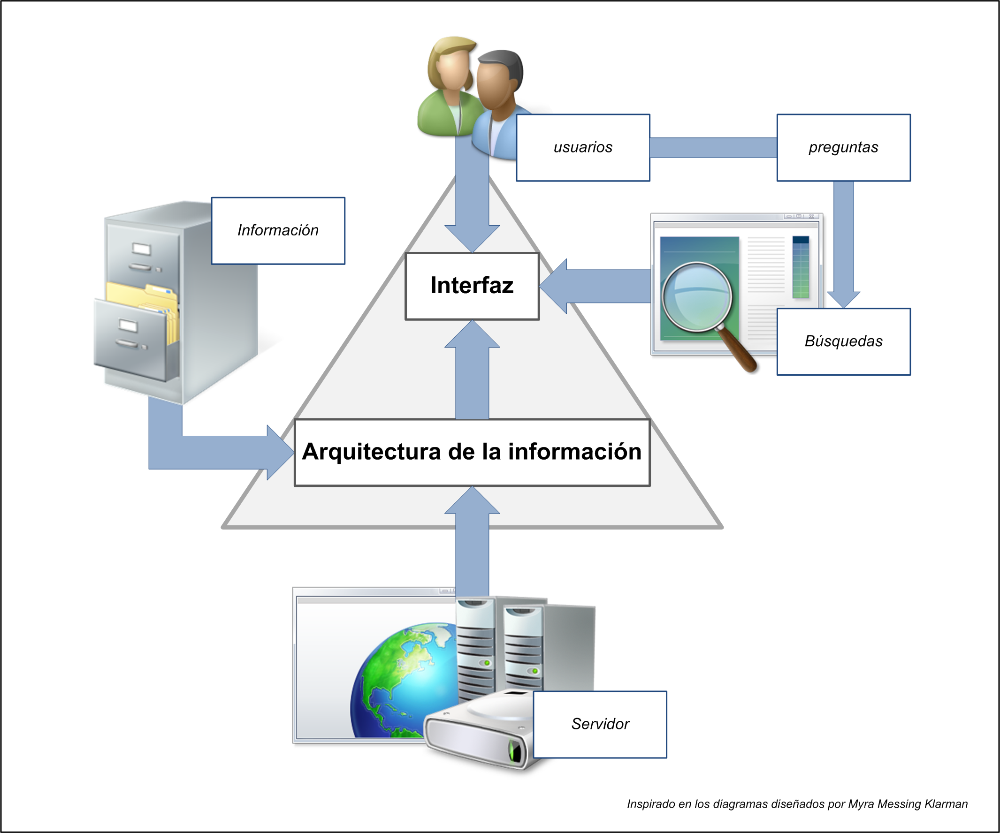

El término Arquitectura de la Información es un concepto utilizado en su forma más amplia para expresar el diseño, organización y distribución de los sistemas informáticos. Richard Saul Wurman acuñó el término en 1976, y trabajó seriamente en la estructura de la información dentro de sus publicaciones, como Information Anxiety, Information Architects, y Information Design. A partir de esta fecha se ha ido extendiendo su uso dentro de las publicaciones técnicas y de referencia, y hasta se ha creado un perfil laboral que comparte muchas habilidades de varias disciplinas.

¿Por qué utilizar la Arquitectura de la Información?
La Arquitectura de la Información brinda muchos beneficios al ubicar rápidamente la información,
encontrar con el menor esfuerzo, establecer relaciones o enlaces, además de reducir costos de
mantenimiento y procesos de reingeniería. Para una empresa es importante que sus clientes
encuentren la información, y que esta información conduzca al usuario a tomar una decisión. Cada
institución debe evaluar los costos que pueden implicar.
El costo en la búsqueda de Información
Existe un costo al encontrar la información. Si se dedica más tiempo en hallar un documento, esos
minutos de demora se pueden reflejar en un costo de horas/hombres, que la empresa gasta por
una falta de planificación. Además en el caso que un cliente no halle información, podría
representar la perdida de alguna venta o transacción.
El costo de construcción y mantenimiento
Existe un costo para diseñar y construir un sitio web, y en caso de cambios, se invierte dinero y
tiempo para rediseñarlo cuando no soporta escalabilidad ni accesibilidad. Similarmente existe un
costo de mantenimiento del sitio Web, el cual sin una estructura clara, puede convertirse en una
tarea engorrosa y fatigante.
El costo en educación y capacitación
Existe un costo en el valor de la educación de los clientes, los cuales pueden tener familiaridad con
el sistema de navegación y las herramientas de búsqueda, y el rediseño de una nueva interface
puede representar un retraso en la curva de aprendizaje de los usuarios. En las intranets, un
sistema complicado y poco claro, puede representar retraso en las tareas de capacitación y errores
de percepción y fallas en los procedimientos.
Los beneficios se reflejan en la facilidad de integración de los sistemas, datos e información; en
procesos documentados y datos en un repositorio central; en el apoyo en el control de los datos, la
gestión de la información y funciones de inventario de datos; en la comprensión del negocio y la
generalización de un vocabulario estandarizado y en la identificación de la redundancia de datos y
duplicación de procesos.
Componentes de la Arquitectura de la Información
La Arquitectura de la Información se puede separar en cuatro componentes: la organización,
navegación, rotulado y sistemas de búsqueda. Cada uno de estos componentes cumple un papel
fundamental en la arquitectura general del sitio Web, y la deficiencia de uno de ellos puede
ocasionar grandes problemas de usabilidad.
Organización
Existen diferentes esquemas de organización, en las cuales se puede dividir en exactas o subjetivas
y ambiguas. La organización exacta se refiere a aquellas que tienen una sola interpretación, como
pueden ser las que se organizan en forma alfabética (diccionarios, directorios y listados ordenados),
cronológicas (revistas, periódicos, publicaciones), geográficas (agencias y sucursales, portales
organizados geográficamente). Mientras la organización subjetiva se basa en diversos criterios,
como son las temáticas (portales horizontales, tiendas organizadas por rubros), funcionales
(intranets corporativas), audiencia específica y la metafórica.
Navegación
El sistema de navegación es uno de los temas más importantes en la accesibilidad y usabilidad del
sitio Web. Proveer opciones para ir de un lado a otro, poder regresar a la página anterior o ir hacia
otras secciones con el menor esfuerzo, puede brindar al usuario cierta placentera comodidad. Existe
barra de navegación horizontal, vertical, desplegable, permanentes. La navegación se puede
clasificar en globales (acceso a las secciones principales), locales (acceso a las secciones internas) y
ad hoc (acceso a secciones relacionadas). Se recomienda presentar información que permita
conocer la ubicación exacta del navegante, como opciones de subir o bajar cuando existen textos
grandes. En la navegación externa, se puede apoyar la navegación utilizando tablas de contenido,
índices, mapas del sitio o visitas guiadas.
Rotulado
La rotulación es una forma de representación de la información, que describe el contenido de una
página Web. Los sistemas de rotulación pueden ser como enlace, encabezados, como iconos, y
además cumple una función fundamental en la indización de documentos.
Sistema de Búsqueda
En algunos sitios Web la posibilidad de explorar el contenido puede ser un pasatiempo placentero,
sin embargo cuando un sitio Web cuenta con más de 50,000 páginas puede convertirse en una
pesadilla. Los sistemas de búsqueda permiten encontrar rápidamente la información, y algunas
interfaces permiten realizar opciones de filtrado por secciones o por tipo de documento. En el caso
de contenidos dinámicos, es necesario implementar un buscador interno, más aún cuando los
robots y arácnidos de indización, no pueden clasificar la información en los grandes motores de
búsqueda
Ciclo de vida de la información en la Web
El ciclo de vida (figura 1) que se propone comienza con el origen de la información, que
en el ambiente digital proviene o de un proceso de digitalización de un documento
impreso o surge en ese propio ambiente como resultado del proceso de hacer explícito
determinado conocimiento.
Esa información que puede estar soportada en diferentes formatos es seleccionada por
el sistema a partir del estudio de la audiencia de un sitio Web y sus necesidades de
información. En este proceso se analizan además múltiples variables como la
infraestructura tecnológica con que cuenta el sistema, las vías de acceso a la
información, las temáticas determinadas por los objetivos del sistema y las necesidades
de sus usuarios y el presupuesto asignado para adquirir dicha información y ponerla a
disposición de la audiencia del sitio.
Luego de determinada la información que contendrá el sistema, se procede a su
organización donde se establecen los esquemas, las estructuras, los sistemas de
navegación y etiquetado a través de los cuales se representará la información y el
sistema interno de búsqueda.
Una vez procesada la información, se hace necesario el diseño de una interfase visual
que permita al usuario interactuar con la información de la manera más idónea.
Para ello es imprescindible, en primera instancia, determinar las herramientas
necesarias para la creación. Como siguiente paso se establece la zonificación de los
elementos visuales de cada nivel atendiendo a los criterios de jerarquía, usabilidad y
estética.
Luego se deben establecer definiciones generales de presentación de la
información y diseño para acceder a esta, definido ya de antemano el tipo de
navegación a utilizar.